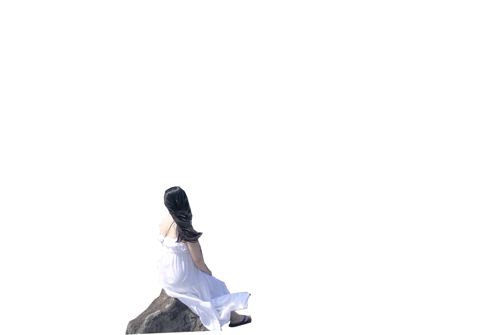
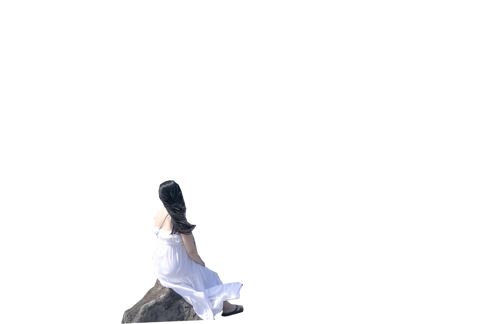

주상절리대
제주특별자치도 서귀포시 중문동
섭지코지
제주특별자치도 서귀포시 성산읍
대포동 주상절리는 제주공항에서 한라산 횡단도로(99번 국도)를 타고 중문의 여미지 식물원을 지나 중문민속촌을 거쳐 제주국제컨벤션센터로 우회전하면 대포동 주상절리군을 볼 수 있다. 서귀포시 대포동 해안에는 '지삿개' 또는 '모시기정'이라고 불리는 절경지가 있다. 육각형의 돌기둥이 겹겹이 쌓여 성처럼 우뚝우뚝 솟아있는 돌기둥 사이로 파도가 부서지는 모습은 한 폭의 그림과도 같다. 지삿개해안 주상절리는 약 1㎞에 이르는 해안에 걸쳐 높이가 30m 정도인 사각내지 육각형 바위가 깎아지른 절벽을 이루고 있다.
섭지코지의 지상은 제주도 동부 해안의 끝에 위치한 지상 이라고도합니다. "지상 목"은이 지역의 고대 이름이며, "지상 목"은 제주도 방언이며, 바깥으로 튀어 나오는 지형을 의미합니다. 땅이 지원 될 수있는 해안 절벽은 넓은 잔디밭으로 나무는 볼 수 없으며 해안에는 요정 석이라고 불리는 암석이 있습니다. 지상에는 등대가 있고 등대로 이어지는 길에는 바람을 막는 돌담이 있습니다. 석벽은 유채밭으로 매년 4 월에 가장 눈부신 노란색을 볼 수 있습니다. 등대에는 철제 계단이있어 쉽게 올라갈 수 있습니다. 난간이 서서 해안을 가로 지르는 풍경이 탁 트인 전망을 제공합니다